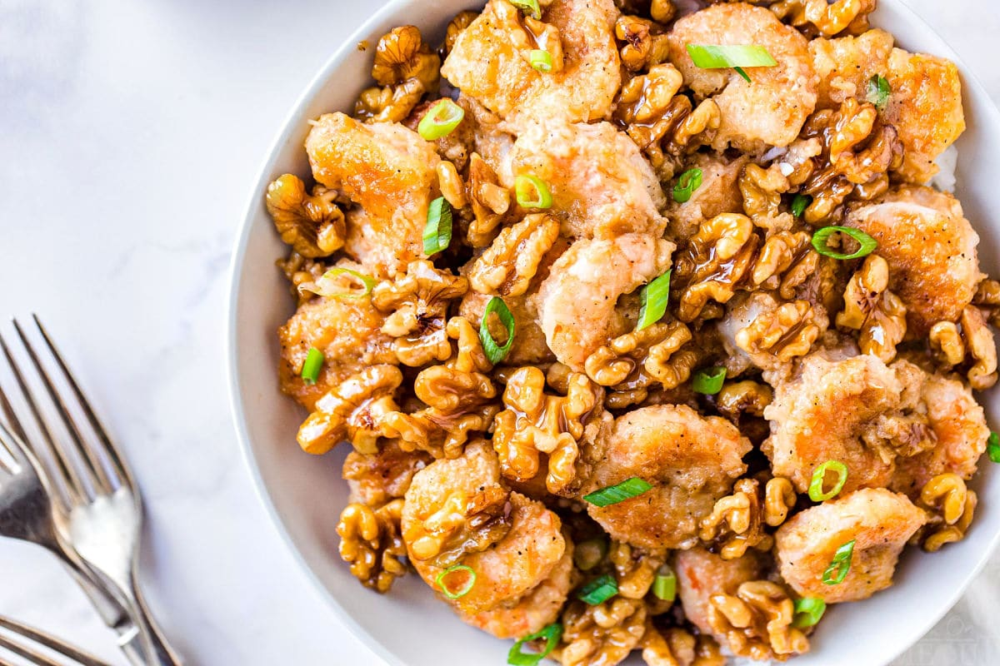

Honey Walnut Shrimp

Description
Crispy shrimp are coated in a dreamy, creamy honey sauce and topped with candied walnuts. A total showstopper and so much better than takeout! Love easy dinner recipes?
Ingredients
To Make Glazed Walnuts
- 1 cup brown sugar
- 1 cup water
- 1 cup walnuts halves
To Fry Shrimp
- 1 lb small raw shrimp peeled, deveined, and tails removed
- ½ teaspoon onion powder
- ½ teaspoon garlic powder
- ½ teaspoon salt
- ½ teaspoon ground black pepper
- ¼ cup cornstarch
- vegetable oil for frying
To Make Sauce
- ¼ cup mayonnaise
- 1 tablespoon sweetened condensed milk
- 1 tablespoon honey
- 1 tablespoon lemon juice
- 2 tablespoons scallions chopped
Steps
- Heat a medium pan with brown sugar, water and walnuts. Bring them to a boil and allow the sugar to thicken up without burning.
- Spoon the walnuts over parchment paper and allow them to cool down and dry. Set aside.
- Season the shrimp with onion powder, garlic powder, salt and pepper. Coat them with cornstarch and deep fry the shrimp in batches until curled and lightly golden. Set aside.
- In a medium bowl, combine; mayonnaise, condensed milk, honey and lemon juice. Set aside.
- Add the fried shrimp, walnuts and pour the prepared sauce on top. Toss everything until well combined.
- Garnish with spring onions and serve.